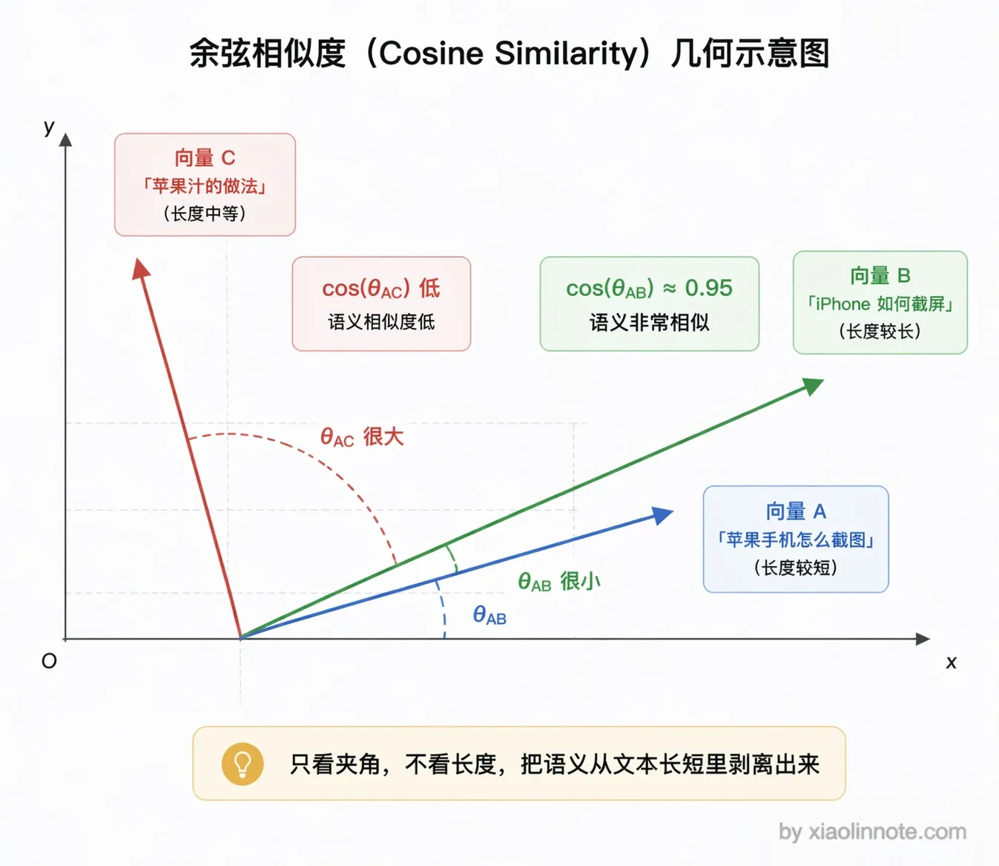
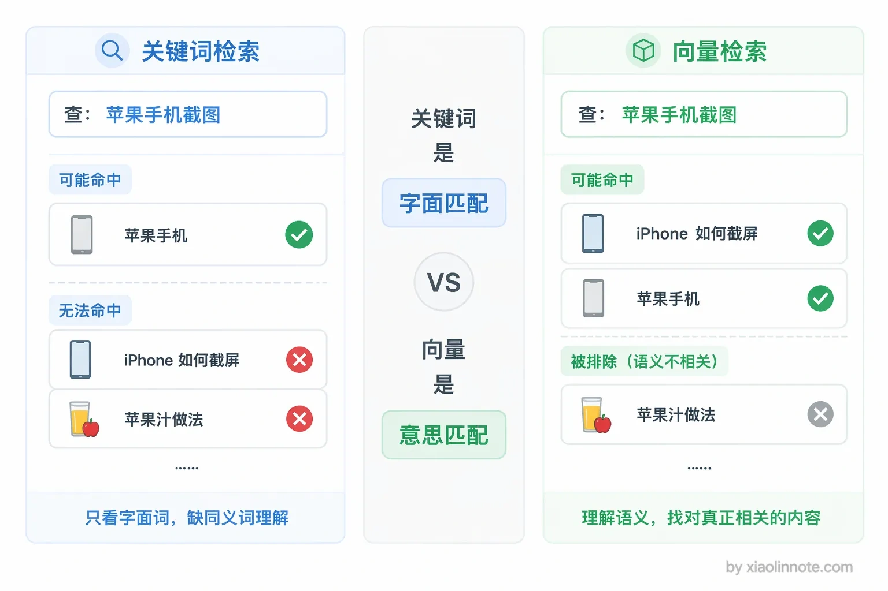
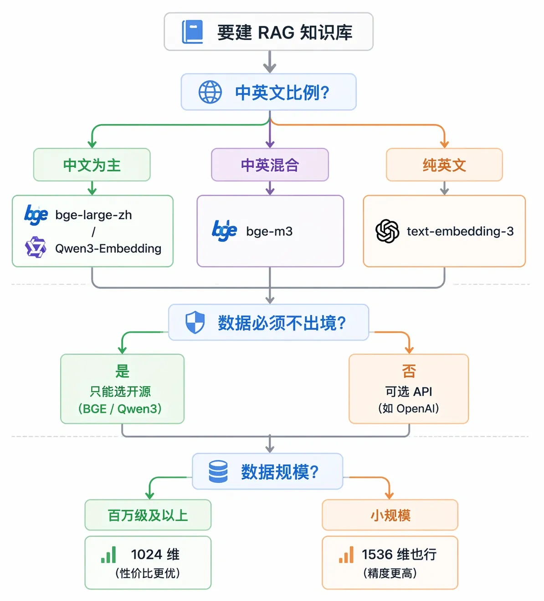
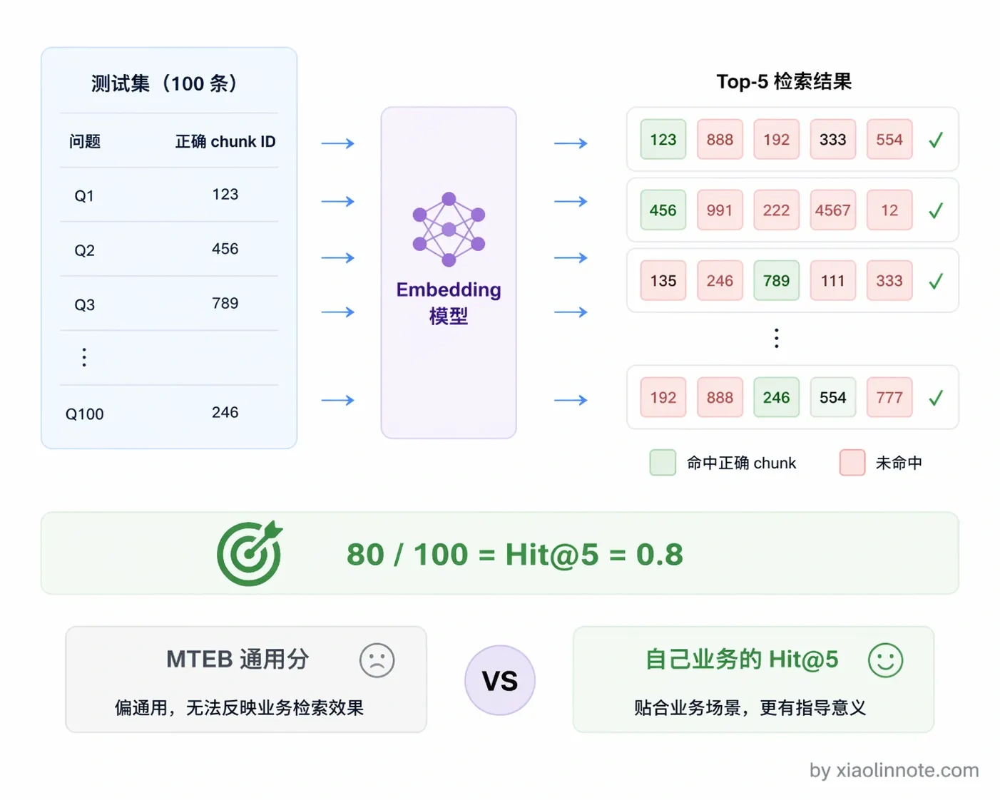

在 RAG 中 Embedding 究竟是什么？如何选择和评估一个 Embedding 模型？
👔面试官：RAG 里的 Embedding 是什么？你是怎么选模型的？
🙋♂️我：Embedding 就是把文本变成向量，用 OpenAI 的模型就行了，效果最好。
👔面试官：「把文本变成向量」说了等于没说。向量的关键特性是什么？为什么语义相似的文本向量就靠近？这个原理你能解释吗？而且 OpenAI 的模型在中文场景上效果就一定好吗？
🙋♂️我：那我就选排行榜分数最高的模型，MTEB 排行榜第一名应该没问题吧？
👔面试官：MTEB 用的是通用数据集，你的业务是做医疗问答还是法律咨询？通用排行榜能代表你的场景效果？你有没有在自己的数据上做过评估？Hit@K 是什么指标你知道吗？
🙋♂️我：呃……Hit@K 没听过，我们就直接用 OpenAI 的，没测过别的。
👔面试官：选模型不测试，全靠感觉和排行榜，这样做出来的系统能好用就怪了。
好吧，Embedding 这块看似只是调个 API，但选型不当整个 RAG 的检索质量都会受影响。下面我来讲清楚。
💡 简要回答
Embedding 我理解就是把一段文本转成一串数字向量的过程。它有一个很关键的特性，就是语义相近的文本，转出来的向量在数学空间里的距离也近。RAG 里的语义检索就是靠这个实现的，不是关键词匹配，而是看两段内容的意思相不相近。
选模型的话，我主要看语言/领域覆盖、向量维度与索引成本、最大输入长度、查询/文档指令格式、部署合规、版本稳定性和实际召回效果。不能笼统地说某个系列在中文或所有业务上更好。
评估这块我的建议是不要只看通用排行榜，一定要在自己的业务数据上跑召回测试，那个才是真正有参考价值的。
📝 详细解析
Embedding 是什么?
Embedding 模型做的事情本质上是「语义压缩」，把一段自然语言文本映射成一个固定长度的浮点数向量。比如一个 1024 维的 Embedding 模型，不管输入的文本是 10 个字还是 500 个字，输出都是一个长度为 1024 的数字列表。
这个映射最关键的性质是：语义相近的文本，向量的余弦相似度高。
为什么衡量相似度要用「余弦」而不是直接算两个向量的直线距离？因为在高维空间里，两段文本的向量长度（模长）会受文本长度、表达强度等非语义因素影响，直接比距离会把「长短」和「语义」混在一起。而余弦只看两个向量的方向（也就是夹角），方向越一致余弦值越接近 1，正好把「意思相近」从「文本长短」里剥离出来。你可以把它理解成：两段话如果「指向同一个意思」，它们的向量箭头就朝着同一个方向，至于箭头多长无所谓。

你可能会觉得这没什么了不起的，关键词搜索不也能找到相关内容吗？还真不一样。
比如「苹果手机怎么截图」和「iPhone 如何截屏」可能在 embedding 空间中更接近；但相似度绝对值、阈值和排序会随模型、归一化、语言和领域变化，不能把 0.95 当通用标准。
这就是语义检索比关键词匹配强的核心原因，它能处理同义词、近义词和不同的表达方式。很多人以为向量检索就是高级的关键词匹配，其实完全不是一回事，它是从「意思」层面在做匹配。

常见 Embedding 模型对比
理解了 Embedding 的原理，接下来就是选模型了。Embedding 模型这两年迭代很快，目前主流的选择大概分几类。
- 选择可以包括托管 API、本地开源模型和多语言/多模态模型。具体维度、输入上限、价格、区域和许可会随版本变化；候选模型名称只能作为待测清单，不能替代当前官方文档和本地基准。
如何选择 Embedding 模型？
聊完了模型分类，具体到你自己的项目，该怎么选？选模型的时候主要看这几个判断点。
- 第一是语言、领域和输入格式：用真实查询/文档对比候选模型，并确认是否需要区分 query/document 指令。
- 第二是数据合规要求：判断是否允许托管 API、数据传输到哪些区域、是否需要本地部署，以及模型许可是否符合业务要求。
- 第三是向量维度和索引成本：维度影响存储、内存、索引和查询成本，但更高维度不保证更高召回；切换模型/维度通常需要重建索引。

如何评估 Embedding 模型？
这里有一个常见的误区：很多人拿 MTEB 这类通用排行榜的分数来选模型，觉得分数高就一定好。MTEB 是一个权威的文本 Embedding 通用排行榜，用多种标准数据集评测模型的语义搜索能力，是好的参考。
但它用的是通用数据集，你的业务场景（比如医疗问诊、法律文档、客服知识库）和通用数据分布差异很大，排行榜第一的模型不一定适合你。就好比高考状元不一定擅长你那个行业的专业考试，测评的数据分布不对，分数就没有参考意义。
正确的评估方法是在自己的业务数据上测：准备带证据位置的查询集，固定 chunk、索引、距离度量和过滤条件，比较候选模型的 Recall@K/Hit@K、MRR 或 nDCG。Hit@5=0.8 表示 80% 查询的至少一个标注相关 chunk 在前 5 条；阈值应由业务风险和当前基线设定，不存在通用 0.7 门槛。还要测索引构建、查询延迟、吞吐、内存、费用和隐私。

把常见的选型维度汇总对比一下：
| 模型 | 维度 | 中文效果 | 是否开源 | 适用场景 |
|---|---|---|---|---|
| 候选类别 | 维度/能力 | 适用判断 | 需要核对 | |
| --- | --- | --- | --- | |
| 托管 embedding API | 维度、降维和价格依版本 | 省运维、可接受数据传输 | 区域、隐私、限流、价格、版本 | |
| 本地开源模型 | 维度、语言和许可各异 | 需要本地部署或数据不出域 | 显存、吞吐、许可、量化效果 | |
| 多语言/领域模型 | 可能支持 query/document 指令 | 中英混合或专业语料 | 真实业务 Recall@K 与索引兼容 |
🎯 面试总结
回到开头那段面试，Embedding 这个问题考察的是你对 RAG 检索层基础的理解。
回答要讲清三点。
第一，Embedding 不只是「文本变向量」，关键是语义相近的文本向量距离近，这才是语义检索的基础。
第二，选模型要看场景：中文场景 BGE 和 Qwen3-Embedding 都是很好的开源选择，中英混合用 bge-m3，有数据合规要求就用开源模型本地部署。
第三，评估模型不要只看 MTEB 排行榜，要在自己的业务数据上跑 Hit@K 测试，这才是真正有参考价值的。
如果面试官追问「你用的什么模型，为什么选它」，应说明候选版本、数据合规、固定的查询集、Recall@K/延迟/成本对比和上线后的漂移监控，不要编造一个脱离上下文的 Hit@5 数字。